AARUUSH'17
About Us
Highlights
Workshops
Championships
Sponsors
Gallery
More
Swastika
T-Summit
Events
Ambassador
Initiatives
Team
Credits
Contact Us
Yuddhame
Robogyan
Online
Machination
Electrizite
X - Zone
Digital Design
Presentatio
Magefficie
Bluebook
Vimanaz
Fundaz
Konstruktion
Architecture
ROBOGYAN
CARBON
Know More
NFS PRO STREET
Know More
MOST WANTED
Know More
NFS SHIFT
Know More
YUDDHAME
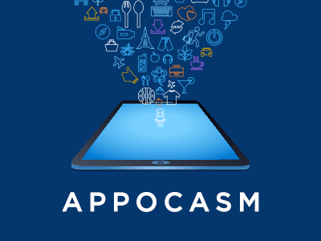
APPocasm
Know More
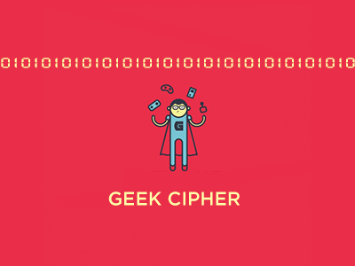
Geek Cipher
Know More
Web Trap
Know More
Code Earth
Know More
ONLINE
Google Hunt
Know More
Digi-Comic
Know More
CAM-O-PHILIC
Know More
MACHINATION
Car Tantra
Know More
Wildstrike
Know More
Retronation
Know More
ELECTRIZITE
Electra-Code
Know More
Digitronics
Know More
Electrobuzz
Know More
Electro-Mania
Know More
X-ZONE
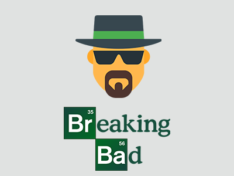
Breaking Bad
Know More
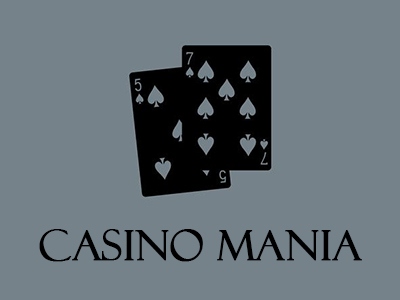
CASINO MANIA
Know More
CRYPTIC CRACK
Know More
Fantastic Beasts
Know More
DIGITAL DESIGN
Artsy Lens
Know More
Digizine
Know More
Location Decrypted
Know More
MadADzzz
Know More
PRAESENTATIO
Four Stages Of Life
Know More
Expresso
Know More
Fandom
Know More
Modinomics
Know More
MAGEFFICIE
The indian Eye
Know More
Hired or Fired 2.0
Know More
Man with a Plan
Know More
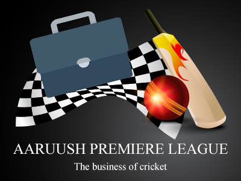
Aaruush Premiere League
Know More
BLUEBOOK
GREY'S M.D
Know More
221B BAKER'S STREET
Know More
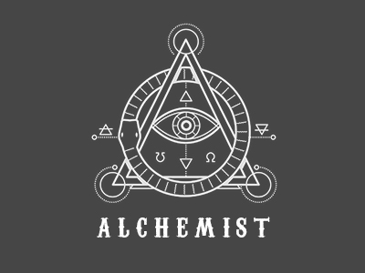
Alchemist
Know More
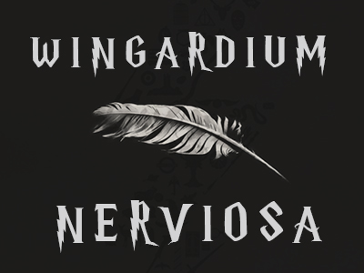
WINGARDIUM NERVIOSA
Know More
VIMANAZ
Aerovision 2.0
Know More
Starfighters
Know More
City of Stars
Know More
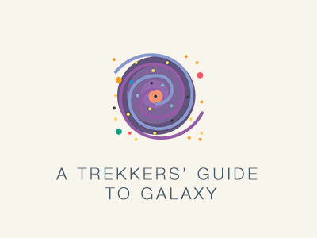
A Trekker’s Guide to the Galaxy
Know More
FUNDAZ
4 States
Know More
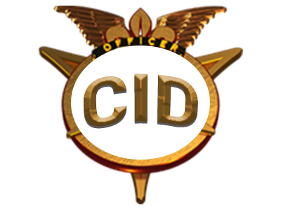
CID
Know More
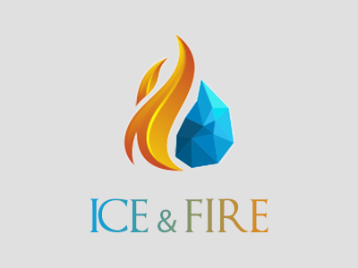
Ice and Fire
Know More
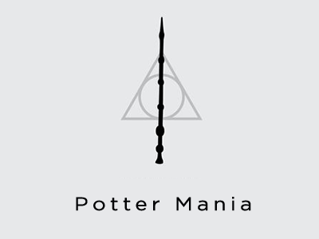
Potter Mania 2.0
Know More
KONSTRUKTION
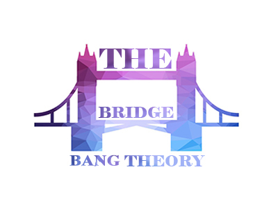
The Bridge Bang Theory
Know More
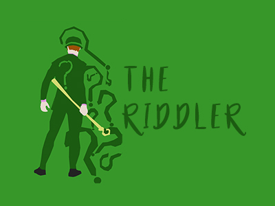
The Riddler
Know More
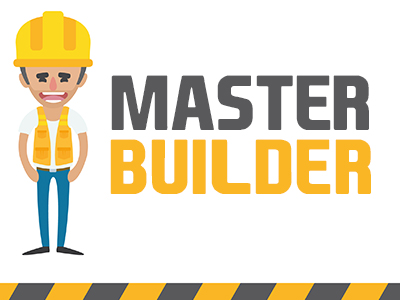
Master Builder
Know More
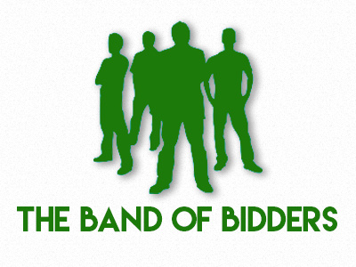
The Band Of Bidders
Know More
ARCHITECTURE
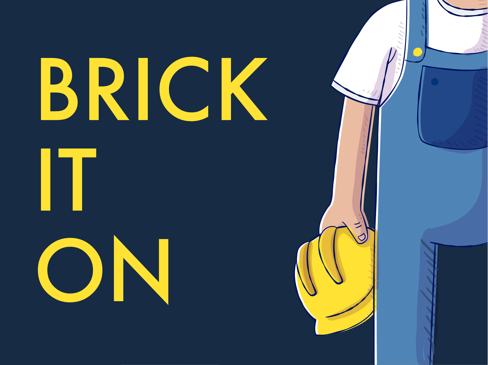
Brickiton
Know More
Game of Stones
Know More
Lost World
Know More
Noah
Know More